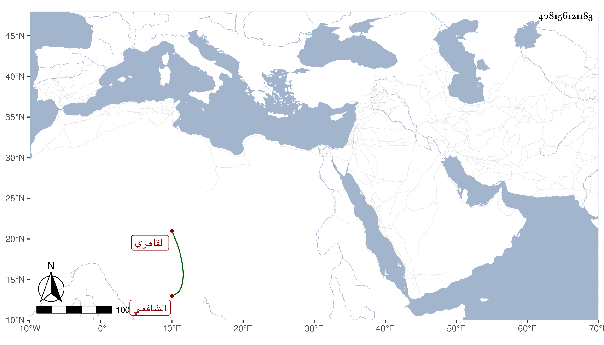

0902Sakhawi.DawLamic.ITO20230111-ara1.EIS1600.408156121183
Biography ID: 408156121183
302
أحمد بن محمد بن الياس الشهاب بن الشمس بن الزين أحد الصلحاء المعتبرين ويسمى أيضا عثمان الدينوري الأصل القاهري الشافعي ويعرف بالمزملاتي . قرأ القرآن وحفظ العمدة والتنبيه وعرض على البلقيني والعراقي وولده والكمال الدميري والتقي الدجوي والعز بن جماعة والزين الفارسكوري وعلى ابن الملقن والبيجوري وأجازوه والبلالي وغيره ممن لم يجز ، وسمع صحيح البخاري على ابن أبي المجد والختم على العراقي والهيثمي والتنوخي وباشر كأبيه السقاية بالخانقاه الصلاحية وكان لذلك يعرف بالمزملاتي . وكان خيرا أجاز لي ومات .
